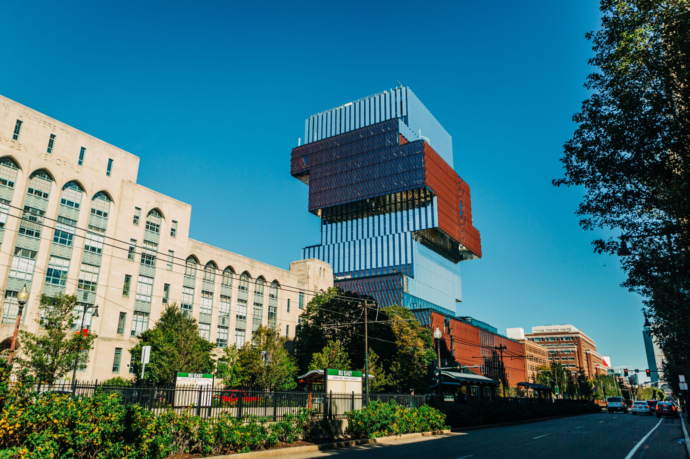

Educational Background
Boston University - College of Arts and Sciences:
Bachelor of Arts Degree: Computer Science, Minor: Biology
Relevant Coursework: Software Engineering, Analysis of Algorithms, Data Structures, Database Structures, Data Science Tools
The High School for Math, Science, and Engineering:
I was a part of the science track which involved a two-year Biomedical Science Enrichment Program at the Center for Excellence in Youth Education (CEYE) at Mount Sinai Hospital.
In my first year of the program I was taught by a Mount Sinai Doctor that specialized in biomedical research.
In the second year of the program I became a clinical research assistant in the Mount Sinai Center for Eosinophilic Disorders (MSCED).